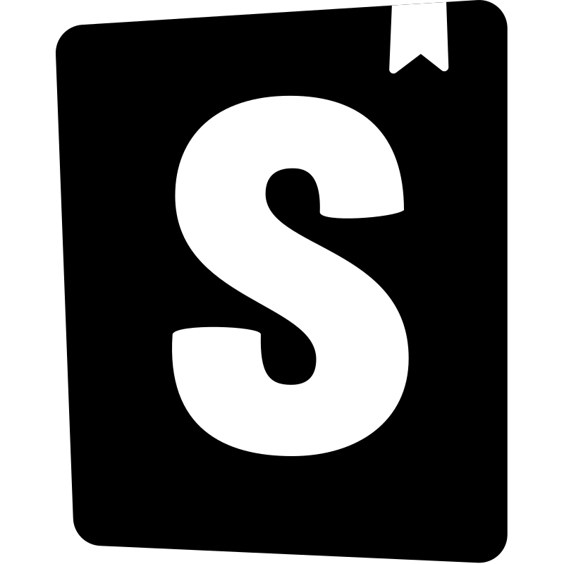

About
I knew I wanted to be a programmer ever since I was in elementary school. I didn't exactly have a good reason for it beyond the fact that my favorite period was the computer lab and I really loved playing Quake Arena when I finished doing my Excel spreadsheet exercises. Later on in high school, after expressing my interest in the topic, my professor lent me a copy of a C book and even though I didn't understand it fully at the time it set me on the path that I am on today. Fast-forward to now, I have had the privilege to work on a variety of projects both as a professional Full Stack Developer at a small web agency and as a Computer Science student at the University of California Berkeley.
As a developer I tend to lean towards the idea that you can always learn more and be better at your craft. In college I entertained the idea of doing freelance work so I took the time to teach myself how to build custom WordPress themes, web design and web accessibility, when working as a Full Stack developer I took it upon myself to learn proper database design and took the lead on building the main relational database for one of our projects. I am extremely curious and strive to make myself useful for whatever project I might be a part of.
In my free time, I enjoy reading my weekly manga and cooking for myself and my housemates. Cooking is actually a big passion of mine, I spent around a year exploring the possibility of pursuing it professionally even rising to the rank of Sous Chef at the kitchen I worked at.
Skills and Tools

StorybookJS